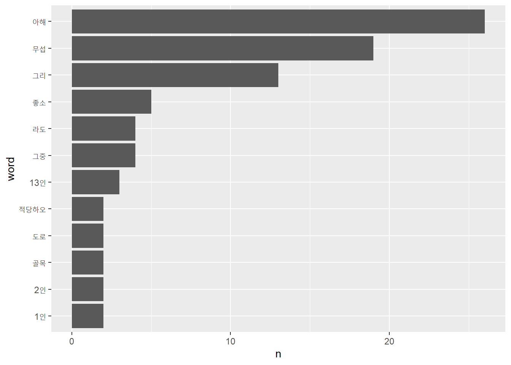
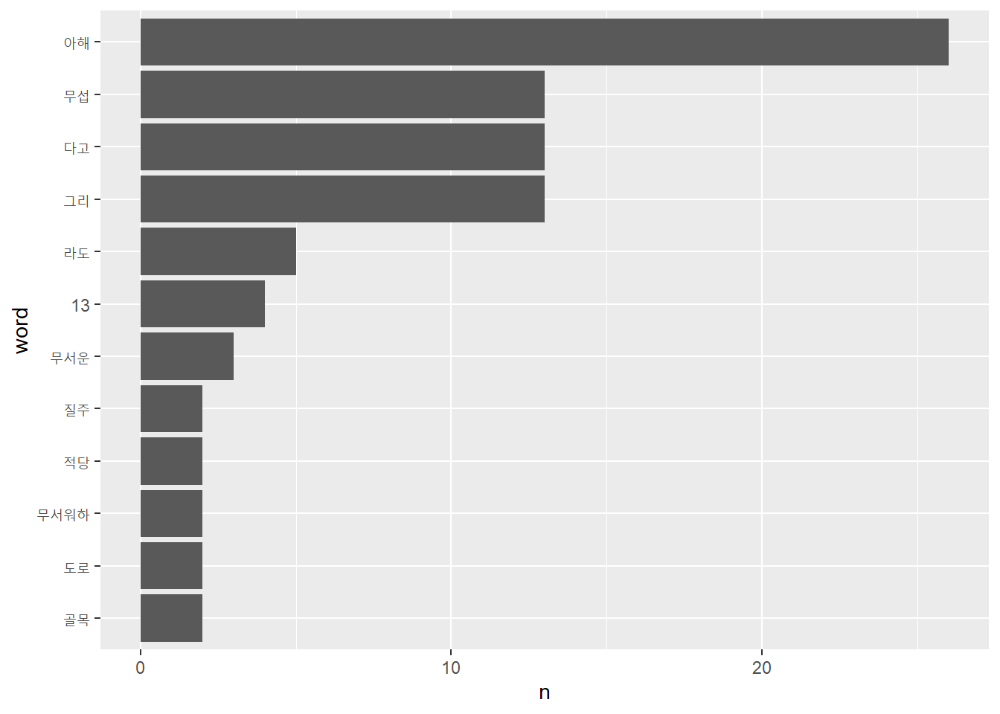
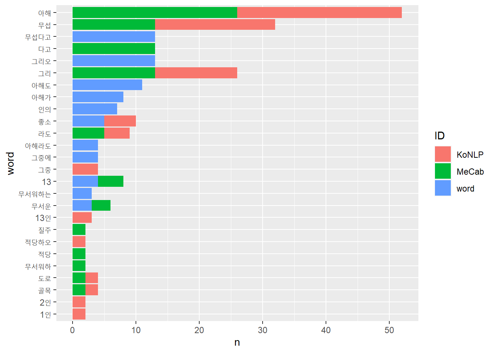

Chapter 7 정제(전처리)
정제는 자료정보지식지혜(DIKW)위계론의 1차부호화 단계에 해당한다. 정제를 거친 자료를 분석하는 2차부호화 과정을 거쳐 자료가 정보로 가공된다. 광물 정제과정에 비유할 수 있다. 금광석 등 광물을 캐면 먼저 잘게 분쇄한다. 불순물을 제거하고, 규격화한 금괴로 가공한다. 마찬가지로 원자료를 분석할 수 있는 단위로 분쇄(토큰화)하고, 불순물을 제거(불용어 제거)한 다음, 규격화한 양식으로 정규화한다.
- 토큰화
- 불용어제거
- 정규화
pkg_l <- c("tidyverse", "tidytext", "textdata")
purrr::map(pkg_l, require, ch = T)## Loading required package: tidyverse## -- Attaching packages --------------------------------------- tidyverse 1.3.0 --## v ggplot2 3.3.2 v purrr 0.3.4
## v tibble 3.0.4 v dplyr 1.0.2
## v tidyr 1.1.2 v stringr 1.4.0
## v readr 1.4.0 v forcats 0.5.0## -- Conflicts ------------------------------------------ tidyverse_conflicts() --
## x dplyr::filter() masks stats::filter()
## x dplyr::lag() masks stats::lag()## Loading required package: tidytext## Loading required package: textdata## Warning: package 'textdata' was built under R version 4.0.5## [[1]]
## [1] TRUE
##
## [[2]]
## [1] TRUE
##
## [[3]]
## [1] TRUE7.1 토큰화
텍스트 원자료를 분석할 수 있도록 토큰(token)으로 잘게 나누는 단계다. 토큰의 단위는 분석 목적에 따라 글자, 단어, 엔그램(n-gram), 문장, 문단 등 다양하게 지정할 수 있다.
7.1.1 unnest_tokens(df, output, input, token = "words", format = c("text", "man", "latex", "html", "xml"), to_lower = TRUE, drop = TRUE, collapse = NULL, ...)
토큰으로 나누는 단위는 분석의 목적에 따라 다양한 단어, 글자, 문장 등 다양한 수준으로 설정할 수 있다.
- “characters” 글자 단위
- “character_shingles” 복수의 글자 단위
- “words” 단어 단위
- “ngrams” 복수의 단어 단위
- “regex” 정규표현식으로 지정
tidytext패키지에서는 unnest_tokens()함수에서는 token =인자로 토큰 단위를 지정할 수 있다.
7.1.1.0.1 단어
unnest_tokens()함수에서 토큰의 기본값으로 설정된 단위는 단어(“words”)다.
text_v <- "You still fascinate and inspire me.
You influence me for the better.
You’re the object of my desire, the #1 Earthly reason for my existence."
tibble(text = text_v) %>%
unnest_tokens(output = word, input = text,
token = "words")## # A tibble: 25 x 1
## word
## <chr>
## 1 you
## 2 still
## 3 fascinate
## 4 and
## 5 inspire
## 6 me
## 7 you
## 8 influence
## 9 me
## 10 for
## # ... with 15 more rows7.1.1.0.2 글자 토큰
token =인자에 “characters”를 투입하면 글자 단위로 토큰화한다.
tibble(text = text_v) %>%
unnest_tokens(output = word, input = text,
token = "characters") %>%
count(word, sort = T)## # A tibble: 21 x 2
## word n
## <chr> <int>
## 1 e 20
## 2 t 10
## 3 o 8
## 4 r 8
## 5 i 7
## 6 n 7
## 7 s 6
## 8 y 6
## 9 a 5
## 10 f 5
## # ... with 11 more rows7.1.1.0.3 복수의 글자
복수의 글자를 토큰의 단위로 할 때는 “character_shingles”을 token =인자에 투입한다. 기본값은 3글자.
tibble(text = text_v) %>%
unnest_tokens(output = word, input = text,
token = "character_shingles", n = 4) %>%
count(word, sort = T)## # A tibble: 104 x 2
## word n
## <chr> <int>
## 1 ence 2
## 2 ethe 2
## 3 reth 2
## 4 1ear 1
## 5 andi 1
## 6 arth 1
## 7 asci 1
## 8 ason 1
## 9 atea 1
## 10 bett 1
## # ... with 94 more rows7.1.1.0.4 복수의 단어(n-gram)
복수의 단어를 토콘 단위로 나눌 때는 token =인자에 “ngrams”인자를 투입한다. 기본값은3개이다.
tibble(text = text_v) %>%
unnest_tokens(output = word, input = text,
token = "ngrams", n = 4) %>%
count(word, sort = T)## # A tibble: 22 x 2
## word n
## <chr> <int>
## 1 1 earthly reason for 1
## 2 and inspire me you 1
## 3 better you’re the object 1
## 4 desire the 1 earthly 1
## 5 earthly reason for my 1
## 6 fascinate and inspire me 1
## 7 for the better you’re 1
## 8 influence me for the 1
## 9 inspire me you influence 1
## 10 me for the better 1
## # ... with 12 more rows7.1.1.0.5 정규표현식
정규표현식(regex: regular expressions)을 이용하면, 토콘을 보다 다양한 방식으로 나눌 수 있다.
token =인자에 “regex”를 지정한다. pattern =에 정규표현식을 투입한다.
정규표현식에서 “new line”을 의미하는 "\n"를 이용해 토큰화할 경우 문장 단위로 토큰화할 경우, 수 있다. 만일 공백 단위로 토큰화한다면, 공백을 의미하는 "\\s"를 투입한다.
tibble(text = text_v) %>%
unnest_tokens(output = word, input = text,
token = "regex", pattern = "\n")## # A tibble: 3 x 1
## word
## <chr>
## 1 "you still fascinate and inspire me."
## 2 "you influence me for the better. "
## 3 "you’re the object of my desire, the #1 earthly reason for my existence."7.1.2 format = c("text", "man", "latex", "html", "xml")
format =인자를 이용해 토큰화하는 문서의 형식을 지정할 수 있다.
“html”문서를 토큰화해보자.
pp_html_df <- tibble(text = read_lines("https://www.gutenberg.org/files/1342/1342-h/1342-h.htm"))
pp_html_df[1:5,]
pp_html_df %>% unnest_tokens(word, text, format = "html") %>% .[1:5,]7.1.3 to_lower = TRUE
영문은 대문자와 소문자 구분이 있다. to_lower =인자의 기본값은 TRUE다. FALSE를 로 지정하면 대문자를 모두 소문자로 변경하지 않는다. 영문문서에서 사람이름이나 지명을 구분해야 한다면 토큰화 과정에서 모든 단어를 소문자화하지 말아야 한다.
tibble(text = text_v) %>%
unnest_tokens(output = word, input = text,
to_lower = FALSE)## # A tibble: 25 x 1
## word
## <chr>
## 1 You
## 2 still
## 3 fascinate
## 4 and
## 5 inspire
## 6 me
## 7 You
## 8 influence
## 9 me
## 10 for
## # ... with 15 more rows7.1.4 strip_punct =
추가인자는 tokenizers함수로 전달해 다양한 설정을 할 수 있다. 예를 들어, strip_punct =인자에 FALSE를 투입하면, 문장부호를 제거하지 않는다.
tibble(text = text_v) %>%
unnest_tokens(output = word, input = text,
token = "words",
strip_punct = FALSE)## # A tibble: 30 x 1
## word
## <chr>
## 1 you
## 2 still
## 3 fascinate
## 4 and
## 5 inspire
## 6 me
## 7 .
## 8 you
## 9 influence
## 10 me
## # ... with 20 more rows7.2 불용어(stop words) 제거
불용어는 말 그대로 사용하지 않는 단어다. 불용어를 문자 그대로 해석하면 사용하지 않는 단어에 국한된다. 넓은 의미로 해석하면, 사용빈도가 높아 분석에 의미가 없거나, 내용을 나타내는데 기여하지 않는 단어, 숫자, 특수문자, 구두점, 공백문자, 기호 등이 포함된다.
무엇이 불용어가 돼야 하는지는 상황에 따라 다르다. 에를 들어, 대명사는 대부분의 불용어사전에 불용어로 포함돼 있지만, 분석 목적에 따라서는 대명사는 분석의 핵심단위가 되기도 한다. 기호도 마찬가지다. 기호를 이용한 이모티콘은 문서의 의미를 전달하기 때문에 모든 기호를 일괄적으로 제거해서는 안된다.
앞서 제시한 연애편지를 문자 단위로 토큰화해 단어의 빈도를 계산해보자.
tibble(text = text_v) %>%
unnest_tokens(output = word, input = text) %>%
count(word, sort = TRUE)## # A tibble: 19 x 2
## word n
## <chr> <int>
## 1 the 3
## 2 for 2
## 3 me 2
## 4 my 2
## 5 you 2
## 6 1 1
## 7 and 1
## 8 better 1
## 9 desire 1
## 10 earthly 1
## 11 existence 1
## 12 fascinate 1
## 13 influence 1
## 14 inspire 1
## 15 object 1
## 16 of 1
## 17 reason 1
## 18 still 1
## 19 you’re 1count로 단어빈도를 계산한 결과를 보면 “the”가 3회, “for,” “me,” “my,” “you”가 각각 2회 사용됐다. 즉, 이 글은 너와 나에 대한 글이런 것을 알수 있다. 사랑고백이란 것이 너와 나의 일이므로 타당하다.
분석결과를 보면 단어빈도로 의미를 파악하는데 불필요한 단어도 있다. “the,” “for,” “of,” “and” 등과 같은 관사, 전치사, 접속사들처럼 자주 사용하는 단어들이다. 이런 단어는 불용어(stop words)로 처리해 분석대상에 제외하는 것이 보다 정확한 의미를 파악하는데 도움이 되는 경우도 있다.
불용어를 제거하는 방법은 크게 두가지가 있는데 혼용한다.
anti_join()불용어목록을 데이터프레임에 저장한 다음,anti_join()함수를 이용해 텍스트데이터프레임과 배제결합하는 방법이다. 두 데이터프레임에서 겹치는 행을 제외하고 결합(join)한다. 이 경우 불용어 목록에 포함된 행이 제외된다.filter()함수와str_detect()함수를 함께 이용해 불용어 지정해 걸러내는 방법이다. 불용어사전에 포함돼 있지 않는 단어를 제거할 때 이용한다.
7.2.1 불용어 사전
주로 사용되는 불용어목록은 불용어사전으로 제공된다. tidytext패키지는 stop_words에 불용어를 모아 놓았다. stop_words의 구조부터 살며보자.
kableExtra패키지를 이용하면 데이터프레임을 깔끔하게 출력할 수 있다.(사용법은 여기)
install.packages("kableExtra")데이터셋을 R세션에 올리는 함수는 data()함수다.
library(kableExtra)## Warning: package 'kableExtra' was built under R version 4.0.5##
## Attaching package: 'kableExtra'## The following object is masked from 'package:dplyr':
##
## group_rowsdata(stop_words)
stop_words %>% glimpse()## Rows: 1,149
## Columns: 2
## $ word <chr> "a", "a's", "able", "about", "above", "according", "accordi...
## $ lexicon <chr> "SMART", "SMART", "SMART", "SMART", "SMART", "SMART", "SMAR...stop_words[c(1:3, 701:703, 1001:1003),] %>%
kbl() %>% kable_classic(full_width = F)| word | lexicon |
|---|---|
| a | SMART |
| a’s | SMART |
| able | SMART |
| during | snowball |
| before | snowball |
| after | snowball |
| parted | onix |
| parting | onix |
| parts | onix |
stop_words는 행이 1,149개(불용어 1,149개)이고, 열이 2개(word와 lexicon)인 데이터프레임이다. word열에 있는 단어가 불용어고, lexicon열에 있는 값은 불용어 용어집의 이름이다. tidytext패키지의 stop_words에는 세 개의 불용어 용어집(SMART, snowball, onix) 이 포함돼 있다. filter함수로 특정 용어집에 있는 불용어 사전만 골라 이용할 수 있다.
stop_words$lexicon %>% unique## [1] "SMART" "snowball" "onix"불용어사전으로 불용어를 걸러낸 다음 단어빈도를 계산해보자.
data(stop_words)
tibble(text = text_v) %>%
unnest_tokens(output = word, input = text) %>%
anti_join(stop_words) %>%
count(word, sort = TRUE)## Joining, by = "word"## # A tibble: 10 x 2
## word n
## <chr> <int>
## 1 1 1
## 2 desire 1
## 3 earthly 1
## 4 existence 1
## 5 fascinate 1
## 6 influence 1
## 7 inspire 1
## 8 object 1
## 9 reason 1
## 10 you’re 1결과를 보면 “you”등 대명사가 포함된 토큰은 모두 제거됐는데, “you’re”는 그대로 남아 있다. 불용어 사전에는 “you’re”로 홑따옴표(quotation mark)'를 이용했는데, 본문에는 “you’re”로 홑낫표(aphostrophe)’를 이용했기 때문이다. 불용어사전으로 본문의 “you’re”를 제거하기 위해서는 둘 중 한가지는 해야 한다. 본몬의 홑낫표를 홑따옴표로 변경하거나, 불용어사전을 수정한다.
7.2.1.1 본문 수정
먼저 본문 수정을 해보자.
tapo_v <- text_v %>% str_replace_all("’", "'")
tibble(text = tapo_v) %>%
unnest_tokens(output = word, input = text) %>%
anti_join(stop_words) %>%
count(word, sort = TRUE)## Joining, by = "word"## # A tibble: 9 x 2
## word n
## <chr> <int>
## 1 1 1
## 2 desire 1
## 3 earthly 1
## 4 existence 1
## 5 fascinate 1
## 6 influence 1
## 7 inspire 1
## 8 object 1
## 9 reason 17.2.1.2 불용어 사전 수정1
불용어 사전에 “you’re”를 추가해보자. 데이터프레임을 만들어 bind_rows()로 데이터프레임을 결합할수도 있고, add_row()로 불용사전에 열을 곧바로 추가할수도 있다.
먼저 add_row()로 행에 곧바로 추가하는 방법을 이용해보자. 추가됐는지 확인이 수월하도록 첫째행 전에 추가하자.
stop_words %>% add_row(word = "you’re", lexicon = "NEW", .before = 1) %>% head(3)## # A tibble: 3 x 2
## word lexicon
## <chr> <chr>
## 1 you’re NEW
## 2 a SMART
## 3 a's SMART이번에는 데이터프레임을 결합해보자. 또한 숫자 “1”도 함께 불용어사전에 추가하자. 먼저 추가할 용어를 불용어사전과 같은 구조의 데이터프레임에 저장한다.
names(stop_words)## [1] "word" "lexicon"stop_add <- tibble(word = c("you’re", "1"),
lexicon = "added")
stop_add## # A tibble: 2 x 2
## word lexicon
## <chr> <chr>
## 1 you’re added
## 2 1 addedbind_rows()함수로 불용어사전과 결합한다.
stop_words2 <- bind_rows(stop_words, stop_add)
stop_words2 %>% tail()## # A tibble: 6 x 2
## word lexicon
## <chr> <chr>
## 1 younger onix
## 2 youngest onix
## 3 your onix
## 4 yours onix
## 5 you’re added
## 6 1 added새로 만든 불용어사전으로 정체한 후 단어 빈도를 계산해보자.
tibble(text = text_v) %>%
unnest_tokens(output = word, input = text) %>%
anti_join(stop_words2) %>%
count(word, sort = TRUE)## Joining, by = "word"## # A tibble: 8 x 2
## word n
## <chr> <int>
## 1 desire 1
## 2 earthly 1
## 3 existence 1
## 4 fascinate 1
## 5 influence 1
## 6 inspire 1
## 7 object 1
## 8 reason 1“you’re”와 숫자가 모두 제거됐다.
7.2.1.3 불용어 사전 수정2
통상적으로 쓰이는 불용어 중에는 실은 문서의 의미를 파악하는데 중요한 단서를 제공하는 단어도 있다. “you” “me” “my” 등과 같은 대명사는 흔하게 사용되기 때문에 불용어로 분류되지만, 맥락를 파악하는데 중요한 역할을 하기도 한다. 불용어 사전에서 대명사를 찾아 불용어 사전에서 제거하자.
stop_words$word %>%
str_subset("(^i$|^i[:punct:]+|^mys*|^me$|mine)")## [1] "i" "i'd" "i'll" "i'm" "i've" "me" "my" "myself"
## [9] "i" "me" "my" "myself" "i'm" "i've" "i'd" "i'll"
## [17] "i" "me" "my" "myself"stop_words3 <- stop_words %>%
filter(
!str_detect(word, "(^i$|^i[:punct:]+|^mys*|^me$|^mine$)"),
)
stop_words3$word %>%
str_subset("^i")## [1] "ie" "if" "ignored" "immediate" "in"
## [6] "inasmuch" "inc" "indeed" "indicate" "indicated"
## [11] "indicates" "inner" "insofar" "instead" "into"
## [16] "inward" "is" "isn't" "it" "it'd"
## [21] "it'll" "it's" "its" "itself" "it"
## [26] "its" "itself" "is" "it's" "isn't"
## [31] "if" "into" "in" "if" "important"
## [36] "in" "interest" "interested" "interesting" "interests"
## [41] "into" "is" "it" "its" "itself"7.2.1.4 불용어 목록 만들기
제거하고 싶은 불용어를 최소화하고 싶을 때는 불용어 목록을 직접 만들수도 있다. “the, for, and”등이 포함된 불용어 목록을 만들어 정제해 보자. “the, for, and”등 불용어목록을 데이터프레임에 저장한 다음, anti_join()함수를 이용해 토큰데이터프레임과 배제결합한다.
stop_df <- tibble(word = c("the","for", "and"))
tibble(text = text_v) %>%
unnest_tokens(output = word, input = text) %>%
anti_join(stop_df) %>%
filter(!str_detect(word, "\\d+")) %>%
count(word, sort = TRUE)## Joining, by = "word"## # A tibble: 15 x 2
## word n
## <chr> <int>
## 1 me 2
## 2 my 2
## 3 you 2
## 4 better 1
## 5 desire 1
## 6 earthly 1
## 7 existence 1
## 8 fascinate 1
## 9 influence 1
## 10 inspire 1
## 11 object 1
## 12 of 1
## 13 reason 1
## 14 still 1
## 15 you’re 17.2.2 filter()
filter()함수를 이용해 불용어사전을 수정하지 않고 불용어를 추가로 제거할 수 있다.
예를 들어, 숫자를 불용어로 취급해 제거하는 상황에서 숫자를 불용어 사전에 넣지 말고 filter()로 걸러보자. 정규표현식(regex: regular expression)에서 숫자를 의미하는 [:digit:] 또는 \\d를 이용해 filter()함수와 str_detect()함수 및 부정연산자 !를 이용해 걸러낸다.
filter()함수를 str_detect()함수와 함께 이용하는 이유는 다음과 같다.
str_subset()함수는 패턴이 일치하는 문자를 출력하는 반면, str_detect()함수는 패턴이 일치하는 문자에 대한 논리값(TRUE or FALSE)을 출력한다.
df <- tibble(text = text_v) %>%
unnest_tokens(output = word, input = text) %>%
anti_join(stop_words)## Joining, by = "word"df$word %>% str_subset(pattern = "\\d+")## [1] "1"df$word %>% str_detect(pattern = "\\d+")## [1] FALSE FALSE FALSE FALSE FALSE FALSE TRUE FALSE FALSE FALSE불용어를 제거한 다음 추가로 본문에서 숫자와 홑낫표“’”가 포함된 문제를 제거하자.
tibble(text = text_v) %>%
unnest_tokens(output = word, input = text) %>%
anti_join(stop_words) %>%
filter(
!str_detect(word, pattern = "\\d+"),
!str_detect(word, pattern = "you’re")
) %>%
count(word, sort = TRUE)## Joining, by = "word"## # A tibble: 8 x 2
## word n
## <chr> <int>
## 1 desire 1
## 2 earthly 1
## 3 existence 1
## 4 fascinate 1
## 5 influence 1
## 6 inspire 1
## 7 object 1
## 8 reason 17.3 정규화(Normalization)
7.3.1 개괄
정규화는 추출한 단어를 일정한 틀로 규격화하는 작업이다. 한 단어는 문법적인 기능에 따라 다양한 표현이 있다. ‘먹다’에는 ’먹었니’ ‘먹었다’ ‘먹고’ 등의 표현이 있다. ‘I’는 격에 따라 ’my’ ‘me’ ‘mine’ 등의 변형이 있다. 다양한 표현이 같은 의미를 나타낸다면 정규화를 통해 일정한 틀로 규격화해야 한다.
정규화는 형태소(morpheme) 추출, 어간(stem) 추출, 표제어(lemme) 추출 등을 이용해 달성할 수 있다.
- 단어(word): 형태소의 집합. 자립이 가능한 최소 형태(예: 사과나무)
- 형태소(morpheme): 뜻을 지닌 가장 작은 말의 단위. 예를 들어, ’사과나무’는 ’사과’와 ’나무’로 나눠도 뜻을 지니지만, ’사과’를 ’사’와 ’과’로 나누면 의미가 사라진다.
- 어기(base): 어근과 어간 등 단어에서 실질적인 의미를 나타내는 형태소
- 어근(root) 어미와 직접결합이 안되는 어기. 예: ‘급하다’의 ’급’ ‘시원하다’의 ’시원.’
- 어간(stem) 어미와 직접결합이 되는 어기. 예: ‘뛰어라’의 ’뛰-.’ ‘먹다’의 ’먹-.’
- 표제어(lemme) 사전에 등재된 대표단어. 원형 혹은 기본형(canonical form)이라고도 한다.
7.3.2 형태소(morpheme)
형태소는 뜻을 지난 가장 작은 말의 단위다. ‘바지가 크다’는 문장에서 단어는 ’바지’ ‘가’ ‘크다’가 있다. 형태소는 ’바지’ ‘가’ ‘크’ ‘다’로 구분할 수 있다. 명사인 ’바지’를 ’바’와 ’지’로 나누면 ’아랫도리에 입는 옷’이란 의미가 사라진다. 반면 형용사인 ’크다’에는 어간인 ’크-’에 ’크다’는 의미가 담겨 있고,’-다’에는 문장을 마무리하는 의미가 담겨 있다.
7.3.2.0.1 품사태깅(Parts of Speech Tagging: PoS Tagging)
형태소를 추출하기 위해서 문장의 단어에 품사를 붙인다(tag).
형태소 분석기마다 품사태깅의 방법이 조금씩 다르다. 한나눔(Hannaum)은 크게 9개 품사로 분류한뒤 22개로 세부 분류했다. Mecab-ko는 43개로 분류했다.
한나눔과 MeCab-ko의 품사태그 (Table 7.1).
| Hannanum09 | (ntags=9) | Hannanum22 | (ntags=22) | Mecab-ko | (ntags=43) |
|---|---|---|---|---|---|
| Tag | Description | Tag | Description | Tag | Description |
| N | 체언 | NC | 보통명사 | NNG | 일반 명사 |
| NQ | 고유명사 | NNP | 고유 명사 | ||
| NB | 의존명사 | NNB | 의존 명사 | ||
| NNBC | 단위를 나타내는 명사 | ||||
| NN | 수사 | NR | 수사 | ||
| NP | 대명사 | NP | 대명사 | ||
| P | 용언 | PV | 동사 | VV | 동사 |
| PA | 형용사 | VA | 형용사 | ||
| PX | 보조 용언 | VX | 보조 용언 | ||
| VCP | 긍정 지정사 | ||||
| VCN | 부정 지정사 | ||||
| M | 수식언 | MM | 관형사 | MM | 관형사 |
| MA | 부사 | MAG | 일반 부사 | ||
| MAJ | 접속 부사 | ||||
| I | 독립언 | II | 감탄사 | IC | 감탄사 |
| J | 관계언 | JC | 격조사 | JKS | 주격 조사 |
| JKC | 보격 조사 | ||||
| JKG | 관형격 조사 | ||||
| JKO | 목적격 조사 | ||||
| JKB | 부사격 조사 | ||||
| JKV | 호격 조사 | ||||
| JKQ | 인용격 조사 | ||||
| JC | 접속 조사 | ||||
| JX | 보조사 | JX | 보조사 | ||
| JP | 서술격 조사 | ||||
| E | 어미 | EP | 선어말어미 | EP | 선어말어미 |
| EF | 종결 어미 | EF | 종결 어미 | ||
| EC | 연결 어미 | EC | 연결 어미 | ||
| ET | 전성 어미 | ETN | 명사형 전성 어미 | ||
| ETM | 관형형 전성 어미 | ||||
| X | 접사 | XP | 접두사 | XPN | 체언 접두사 |
| XS | 접미사 | XSN | 명사파생 접미사 | ||
| XSV | 동사 파생 접미사 | ||||
| XSA | 형용사 파생 접미사 | ||||
| XR | 어근 | ||||
| S | 기호 | S | 기호 | SF | 마침표, 물음표, 느낌표 |
| SE | 줄임표 … | ||||
| SSO | 여는 괄호 (, [ | ||||
| SSC | 닫는 괄호 ), ] | ||||
| SC | 구분자 , · / : | ||||
| SY | 기타 기호 | ||||
| SH | 한자 | ||||
| SL | 외국어 | ||||
| SN | 숫자 | ||||
| F | 외국어 | F | 외국어 |
7.3.3 형태소 추출
정규화는 형태소를 추출해 달성할 수 있다. R의 대표적인 형태소 분석기로는 RcppMeCab와 KoNLP가 있다.
7.3.3.1 RcppMeCab
한국어뿐 아니라 일본어와 중국어 형태소 분석도 가능하고 실행속도가 빠르다.
일본교토대학정보학연구대학원과 일본전신전화의 커뮤니케이션기본과학연구소가 공동으로 개발한 오픈소스 형태소 분석기 MeCab 기반이다. 은전 프로젝트로 한국어 형태소를 분석할수 있게 개발했다. RcppMeCab패키지는 MeCab을 R에서 사용할 수 있도록 한 패키지다. 일본어 기반이라 띄어쓰기에 덜 민감하다.
7.3.3.2 KoNLP
Java 기반의 한나눔(Hannanum) 분석기 기반이다. 널리 사용되는 형태소분석기다. NIADic, Sejong등 사전을 선택할 수 있다. 사용설명서가 있고, 사용자 사전을 수정하기 용이하다.
7.3.4 RcppMeCab
RcppMeCab패키지를 설치하고 실행하자. 설치되는 기본폴더는 C:\mecab다. 설치폴더를 변경하지 않는다.
install.packages('RcppMeCab')주의
C드라이브에 C:\mecab폴더가 생성됐는지 확인한다. 사전파일이 이곳에 있다. 만일 C:\mecab폴더가 생성되지 않았다면 설치가 안된것이다. RStudio를 관리자권한으로 실행해 설치한다.
만일, RStudio를 관리자권한으로 실행해 설치해도 C:\mecab가 생성되지 않는경우, 이 링크에서 사전파일을 다운로드 받아 파일을 압축해제해 복사한다. C:\mecab가 생성되고, 이 폴더 바로 아래에 libmecab.dll파일과 mecab-ko-dic폴더가 생성돼 있어야 한다.
기본함수는 pos()다. 문자벡터를 받아 리스트로 산출한다.
library(RcppMeCab)
test <- "한글 테스트 입니다."
pos(test)## $`<c7><U+0471><db> <c5><U+05FD><U+00BA><U+01AE> <c0><U+0534><U+03F4><d9>.`
## [1] "<c7><d1>/SL" "<U+00B1><db> /SY" "<c5><d7>/SL" "<U+00BD><U+00BA>/SY" "<U+01AE>/SL"
## [6] "<c0><U+0534>/SY" "<U+03F4>/SL" "<d9>./SY"한글이 깨지는 경우가 있는데, 이는 한글인코딩 방식이 맞지 않기 때문이다. 윈도는 EUC-KR방식을 확장한 CP949방식을 사용하기 때문에 UTF-8방식과 호환이 안된다. 이 경우 enc2utf8함수를 이용해 한글인코딩 방식을 UTF-8으로 변경한다.
library(tidyverse)
test_v <- enc2utf8(test)
test_v %>% pos## $`한글 테스트 입니다.`
## [1] "한글/NNG" "테스트/NNG" "입니다/VCP+EF" "./SF"참고: UTF-8을 CP949로 인코딩을 바꾸고 싶으면 iconv함수를 이용한다.
iconv(x, from = "UTF-8", to = "CP949")`x는 문자벡터. 자세한 사용법은 ?iconv 참조.
7.3.4.1 join = FALSE
join = FALSE인자를 이용하면 품사태그를 제외하고 형태소만 산출한다.
test_v %>% pos(join = FALSE)## $`한글 테스트 입니다.`
## NNG NNG VCP+EF SF
## "한글" "테스트" "입니다" "."7.3.4.2 format = "data.frame"
format = "data.frame"을 지정하면 데이터프레임으로 산출한다.
test_v %>% pos(format = "data.frame")## doc_id sentence_id token_id token pos subtype
## 1 1 1 1 한글 NNG
## 2 1 1 2 테스트 NNG 행위
## 3 1 1 3 입니다 VCP+EF
## 4 1 1 4 . SF7.3.4.3 posParallel(x)
posParallel()함수는 메모리를 많이 사용하지만 처리속도가 빠르다.
test_v %>% posParallel(format = "data.frame")## doc_id sentence_id token_id token pos subtype
## 1 1 1 1 한글 NNG
## 2 1 1 2 테스트 NNG 행위
## 3 1 1 3 입니다 VCP+EF
## 4 1 1 4 . SF7.3.5 KoNLP
형태소 분석기 한나눔(Hannanum)을 R에서 사용할 수 있도록한 패키지다. CRAN에서 내려져 있기 때문에 개발자 깃헙에서 remote패키지의 install_github()함수를 이용해 설치한다.
KoNLP를 설치하기 위해서는 자바와 rtools가 필요하다.
7.3.5.1 자바JDK
- 자바JDK를 다운로드받아 설치한다.
jdk설치여부는 C:\Program Files\Java\jdk-16폴더에서 확인할 수 있다. Java SE 16보다 최신 버전이 있으면 최신버전으로 새로 설치한다.
- 윈도
시스템 속성창의환경변수에서JAVA_HOME을 설정한다.
시스템 속성창 여는 방법
- 간단한 방법:
윈도 실행창 단축키인 윈도키와 키보드의 R을 함께 누르면 윈도 실행창이 열린다. 실행창이 뜨면 sysdm.cpl ,3을 입력하고 엔터키를 누르면 시스템 속성 창이 열린다.
- 복잡한 방법 (윈도10 기준):
윈도탐색기에서
내 PC에 마우스 커서를 놓고 마우스 오른쪽 버튼 클릭 ->속성(R)클릭해 윈도설정에서정보창이 열린다.윈도설정에서
정보창이 열리면관련설정항목에서고급 시스템 설정클릭하면시스템 속성창의고급탭이 열린다.
환경변수 설정하기
시스템 속성창 하단의환경설정버튼을 클릭한다.환경변수창이 열리면시스템변수(S)아래의새로만들기(W)버튼을 클릭한다.새 시스템 변수창이 열리면변수 이름(N):에JAVA_HOME을 기입하고,변수 값(V)에서 JDK설치 경로C:\Program Files\Java\jdk-16\를 기입하고확인을 클릭한다.
7.3.5.2 rtools
CRAN의
rtools페이지에 접속한다.설치된 R버전과 일치하는 버전의
rtools를 다운로드받는다. R이 4.0대 버전이면rtools40을 설치한다.
rtools는 다른 패키지와 달리install.packages()함수로 설치하지 않고, 설치파일을 컴퓨터에서 직접 실행해 설치한다.
- 설치할때 경로변경하지 말고
C:/Rtools에 설치한다. 실치과정에서Add rtools to system PATH가 체크돼 있는지 확인한다.
- 기타 KoNLP 설치이슈에 대해서는 이 문서 참조
7.3.5.3 의존패키지
설치할 때 오류가 나는 경우가 있다. 의존패키지(패키지작동에 필요한 다른 패키지)가 설치돼 있지 않기 때문이다. 다음은 KoNLP의존 패키지다.
- rJava (>= 0.9-8),
- utils (>= 3.3.1),
- stringr (>= 1.1.0),
- hash (>= 2.2.6),
- tau (>= 0.0-18),
- Sejong (>= 0.01),
- RSQLite (>= 1.0.0),
- devtools (>= 1.12.0)
아래 코드로 필요한 패키지가 이미 설치돼 있는지 확인할 수 있다.
package_list <- c("rJava", "utils", "stringr", "hash", "remote",
"tau", "Sejong", "RSQLite", "devtools")
( package_list_installed <- package_list %in% installed.packages()[,"Package"] )## [1] TRUE TRUE TRUE TRUE TRUE TRUE TRUE TRUE TRUE( new_pkg <- package_list[!package_list_installed] )## character(0)아래 코드로 미설치된 패키지를 한번에 설치할 수 있다. 만일 설치가 안되면 이 교재 2.4 오류를 참고해 개별적으로 설치한다.
if(length(new_pkg)) install.packages(new_pkg)의존성 패키지가 의존하는 패키지가 있다. 만일 오류메시지가 나오면 메시지를 잘 읽어보고, 필요한 패키지를 추가로 설치한다.
KoNLP설치 준비가 됐으면 아래 코드로 설치한다.
remotes::install_github('haven-jeon/KoNLP',
upgrade = "never",
INSTALL_opts=c("--no-multiarch"))제대로 설치됐는지 확인해보자.
library(KoNLP)## Checking user defined dictionary!extractNoun("한글테스트입니다.")## [1] "한글" "테스트"SimplePos09("한글테스트입니다.")## $한글테스트입니다
## [1] "한글테스트/N+이/J+ㅂ니다/E"
##
## $.
## [1] "./S"KoNLP에서 사용할 사전을 설치하자. NIADic이 SejongDic보다 더 많은 형태소를 포함하고 있다. 설치과정에서 기 설치된 패키지 업데이트 여부를 묻는다. 모두 최신버전으로 업데이트한다.
useNIADic()## Backup was just finished!
## 1213109 words dictionary was built.한글띄어쓰기가 안돼 있는 문서는 autoSpacing = T인자를 투입한다.
"아버지가가방에들어가신다" %>% SimplePos09()
"아버지가가방에들어가신다" %>% SimplePos09(autoSpacing = T)띄어쓰기 안된 문서의 행태소 분석에는 MeCab이 유리하다.
"한글테스트입니다" %>% SimplePos09(autoSpacing = T)## $한
## [1] "한/N"
##
## $글테스트입니
## [1] "글테스트입니/N"
##
## $다
## [1] "다/M""한글테스트입니다" %>% enc2utf8() %>% RcppMeCab::pos() ## $한글테스트입니다
## [1] "한글/NNG" "테스트/NNG" "입니다/VCP+EC""아버지가가방에들어가신다" %>% enc2utf8() %>% RcppMeCab::pos() ## $아버지가가방에들어가신다
## [1] "아버지/NNG" "가/JKS" "가방/NNG" "에/JKB" "들어가/VV"
## [6] "신다/EP+EC"KoNLP를 이용해 띄어쓰기가 잘 안된 문서를 분석할 때는 KoSpacing패키지로 띄어쓰기를 조절할 수 있다(설치과정이 복잡하므로 선택 사항.)
remotes::install_github("haven-jeon/KoSpacing")
library(KoSpacing)
set_env()
spacing("한글테스트입니다.")KoNLP의 장점은 기존 사전에 사용자사전을 추가할 수 있다는데 있다.
"힣탈로미를 어떻게 할까요" %>% SimplePos09buildDictionary(ext_dic = c('sejong', 'woorimalsam'),
user_dic = data.frame(term="전작권", tag='ncn'),
category_dic_nms=c('political'))## 718105 words dictionary was built.buildDictionary(ext_dic = "woorimalsam",
user_dic=data.frame("힣탈로미", "ncn"),
replace_usr_dic = T)## 629898 words dictionary was built.7.3.6 KoNLPy
형태소 분석기로는 한나눔(Hannanum)과 MeCab외 꼬꼬마(Kkma), 코모란(Komoran), Okt 등의 형태소는 파이썬 패키지인 KoNLPy로 추출가능하다.
구글 colab에서 파이썬을 구동하면 KoNLPy패키지를 설치해 다양한 패키지로 형태소를 분석할 수 있다.
7.3.7 연습
이상의 오감도를 KoNLP와 RcppMeCab을 이용해 각각 형태소분석해 자주 사용된 단어의 빈도를 비교하자. 이 결과를 형태소를 추출하지 않은 결과와도 비교하자.
ogamdo_txt <- "13인의 아해가 도로로 질주하오.
(길은 막다른 골목이 적당하오.)
제1의 아해가 무섭다고 그리오.
제2의 아해도 무섭다고 그리오.
제3의 아해도 무섭다고 그리오.
제4의 아해도 무섭다고 그리오.
제5의 아해도 무섭다고 그리오.
제6의 아해도 무섭다고 그리오.
제7의 아해도 무섭다고 그리오.
제8의 아해도 무섭다고 그리오.
제9의 아해도 무섭다고 그리오.
제10의 아해도 무섭다고 그리오.
제11의 아해가 무섭다고 그리오.
제12의 아해도 무섭다고 그리오.
제13의 아해도 무섭다고 그리오.
13인의 아해는 무서운 아해와 무서워하는 아해와 그렇게뿐이 모였소.(다른 사정은 없는 것이 차라리 나았소)
그중에 1인의 아해가 무서운 아해라도 좋소.
그중에 2인의 아해가 무서운 아해라도 좋소.
그중에 2인의 아해가 무서워하는 아해라도 좋소.
그중에 1인의 아해가 무서워하는 아해라도 좋소.
(길은 뚫린 골목이라도 적당하오.)
13인의 아해가 도로로 질주하지 아니하여도 좋소."7.3.7.1 KoNLP
KoNLP의 SimplePos09()함수를 unnset_tokens()의 token =인자로 투입하면 오류가 발생한다.
ogamdo_txt %>% tibble(text = .) %>%
unnest_tokens(word, text, token = SimplePos09)문자벡터에서 형태소 추출해 데이터프레임으로 저장한다.
ogamdo_txt %>% SimplePos09() %>% flatten_dfc() %>%
pivot_longer(everything(), names_to = "header", values_to = "value") %>%
separate_rows(value, sep = "\\+") %>%
separate(value, into = c("word", "pos"), sep = "/") %>%
count(word, sort = T) %>%
filter(str_length(word) > 1) %>%
slice_max(n, n = 10) %>%
mutate(word = reorder(word, n)) %>%
ggplot() + geom_col(aes(word, n)) +
coord_flip()## New names:
## * `13인의` -> `13인의...1`
## * 아해가 -> 아해가...2
## * 도로로 -> 도로로...3
## * . -> ....5
## * `(길은` -> `(길은...6`
## * ...
KoNLP의 extractNoun()함수 이용
ogamdo_txt %>% extractNoun() %>% tibble(text = .)## # A tibble: 79 x 1
## text
## <chr>
## 1 13
## 2 인
## 3 아해
## 4 도로
## 5 질주
## 6 하오
## 7 골목
## 8 적당
## 9 하오
## 10 제1
## # ... with 69 more rows7.3.7.2 RcppMeCab
RcppMeCab의 pos()함수 이용
enc2utf8(ogamdo_txt) %>% pos(format = "data.frame") %>%
select(token:pos) %>%
count(token, sort = T) %>%
filter(str_length(token) >1) %>%
slice_max(n, n = 10) %>%
mutate(token = reorder(token, n)) %>%
ggplot + geom_col(aes(token, n)) +
coord_flip()RcppMeCab의 pos()함수는 unnest_tokens()의 token =인자에 투입해도 된다.
ogamdo_txt %>% enc2utf8 %>% tibble(text = .) %>%
unnest_tokens(word, text, token = pos) %>%
separate(col = word,
into = c("word", "morph"),
sep = "/" ) %>%
count(word, sort = T) %>%
filter(str_length(word) > 1) %>%
slice_max(n, n = 10) %>%
mutate(word = reorder(word, n)) %>%
ggplot() + geom_col(aes(word, n)) +
coord_flip()
7.3.7.3 형태소 미추출
ogamdo_txt %>% tibble(text = .) %>%
unnest_tokens(word, text) %>%
count(word, sort = T) %>%
filter(str_length(word) > 1) %>%
slice_max(n, n = 10) %>%
mutate(word = reorder(word, n)) %>%
ggplot() + geom_col(aes(word, n)) +
coord_flip()
7.3.7.4 비교
먼저 데이터프레임으로 결합한 후 행과 열 확인.
KoNLP_df <- ogamdo_txt %>% SimplePos09() %>% flatten_dfc() %>%
pivot_longer(everything(), names_to = "header", values_to = "value") %>%
separate_rows(value, sep = "\\+") %>%
separate(value, into = c("word", "pos"), sep = "/") %>%
count(word, sort = T) %>%
filter(str_length(word) > 1) %>%
slice_max(n, n = 10)## New names:
## * `13인의` -> `13인의...1`
## * 아해가 -> 아해가...2
## * 도로로 -> 도로로...3
## * . -> ....5
## * `(길은` -> `(길은...6`
## * ...MeCab_df <- ogamdo_txt %>% enc2utf8 %>% tibble(text = .) %>%
unnest_tokens(word, text, token = pos) %>%
separate(col = word,
into = c("word", "morph"),
sep = "/" ) %>%
count(word, sort = T) %>%
filter(str_length(word) > 1) %>%
slice_max(n, n = 10)
word_df <- ogamdo_txt %>% tibble(text = .) %>%
unnest_tokens(word, text) %>%
count(word, sort = T) %>%
filter(str_length(word) > 1) %>%
slice_max(n, n = 10)
KoNLP_df %>% glimpse()## Rows: 12
## Columns: 2
## $ word <chr> "아해", "무섭", "그리", "좋소", "그중", "라도", "13인", "1인", "2인", "골목", "...
## $ n <int> 26, 19, 13, 5, 4, 4, 3, 2, 2, 2, 2, 2MeCab_df %>% glimpse()## Rows: 12
## Columns: 2
## $ word <chr> "아해", "그리", "다고", "무섭", "라도", "13", "무서운", "골목", "도로", "무서워하",...
## $ n <int> 26, 13, 13, 13, 5, 4, 3, 2, 2, 2, 2, 2word_df %>% glimpse()## Rows: 11
## Columns: 2
## $ word <chr> "그리오", "무섭다고", "아해도", "아해가", "인의", "좋소", "13", "그중에", "아해라도", ...
## $ n <int> 13, 13, 11, 8, 7, 5, 4, 4, 4, 3, 3행의 수와 열의 이름이 같으므로 세 데이터프레임을 행방향 결합할 수 있다. 결합한 데이터프레임으로 막대도표로 시각화한다.
df <- bind_rows(KoNLP = KoNLP_df, MeCab = MeCab_df, word = word_df, .id = "ID")
df %>% mutate(word = reorder(word, n)) %>%
ggplot() + geom_col(aes(word, n, fill = ID)) +
coord_flip()
세 경우에 대해 ID열로 값이 부여돼 있으므로 facet_wrap()함수로 구분할 수 있다.
df %>% mutate(word = reorder(word, n)) %>%
ggplot() + geom_col(aes(word, n, fill = ID), show.legend = F) +
coord_flip() +
facet_wrap(~ID)
라벨을 세개의 도표에 분리해 표시하자. scales =인자를 “free”로 지정한다. 기본값은 “fixed”다.
df %>% mutate(word = reorder(word, n)) %>%
ggplot() + geom_col(aes(word, n, fill = ID), show.legend = F) +
coord_flip() +
facet_wrap(~ID, scales = "free") +
ggtitle("형태소분석기 비교") +
xlab("단어") + ylab("빈도") +
theme(plot.title = element_text(size = 24, hjust = 0.5),
axis.title.x = element_text(size = 18),
axis.title.y = element_text(size = 18))
7.3.8 어간(stem) 추출
단어(word): 형태소의 집합. 자립이 가능한 최소 형태(예: 사과나무)
형태소(morpheme): 뜻을 지닌 가장 작은 말의 단위. 예를 들어, ’사과나무’는 ’사과’와 ’나무’로 나눠도 뜻을 지니지만, ’사과’를 ’사’와 ’과’로 나누면 의미가 사라진다.
어기(base): 어근과 어간 등 단어에서 실질적인 의미를 나타내는 형태소
어근(root) 어미와 직접결합이 안되는 어기. 예: ‘급하다’의 ’급’ ‘시원하다’의 ’시원.’
어간(stem) 어미와 직접결합이 되는 어기. 예: ‘뛰어라’의 ’뛰-.’ ‘먹다’의 ’먹-.’
표제어(lemme) 사전에 등재된 대표단어. 원형 혹은 기본형(canonical form)이라고도 한다.
어간추출과 표제어 추출에 대한 설명 참고 문헌
어간추출 패키지
SnowballC
어간추출로 널리 사용되는 알고리듬인 포터 알고리듬 스테밍을 적용.
hunspell
포터알고리즘에 사전 방식 결합
SnowballC와 hunspell은 tidytext 등 텍스트분석 패키지와 패키지로 함께 설치되나 함께 부착되지는 않는다.
love_v <- c("love", "loves", "loved","love's" ,"lovely",
"loving", "lovingly", "lover", "lovers", "lovers'", "go", "went")
SnowballC::wordStem(love_v)## [1] "love" "love" "love" "love'" "love" "love"
## [7] "lovingli" "lover" "lover" "lovers'" "go" "went"hunspell::hunspell_stem(love_v)## [[1]]
## [1] "love"
##
## [[2]]
## [1] "love"
##
## [[3]]
## [1] "loved" "love"
##
## [[4]]
## [1] "love"
##
## [[5]]
## [1] "lovely" "love"
##
## [[6]]
## [1] "loving" "love"
##
## [[7]]
## [1] "loving"
##
## [[8]]
## [1] "lover" "love"
##
## [[9]]
## [1] "love"
##
## [[10]]
## character(0)
##
## [[11]]
## [1] "go"
##
## [[12]]
## [1] "went"hunspell은 리스트로 산출하므로 unnest()함수로 리스트구조를 풀어준다. unnest()는 flatten_()계열과 달리 데이터프레임을 입력값으로 받는다.
library(hunspell)
love_v %>% tibble(text = .) %>% unnest_tokens(word, text) %>%
mutate(hunspell = hunspell_stem(word)) ## # A tibble: 12 x 2
## word hunspell
## <chr> <list>
## 1 love <chr [1]>
## 2 loves <chr [1]>
## 3 loved <chr [2]>
## 4 love's <chr [1]>
## 5 lovely <chr [2]>
## 6 loving <chr [2]>
## 7 lovingly <chr [1]>
## 8 lover <chr [2]>
## 9 lovers <chr [1]>
## 10 lovers <chr [1]>
## 11 go <chr [1]>
## 12 went <chr [1]>unnest()로 리스트를 풀면 토큰의 수가 늘어난다. hunspell_stem()함수가 스테밍 전후의 단어를 모두 산출하기 때문이다. hunspell로 어간추출할때는 주의해야 한다. hunspell패키지의 목적이 텍스트분석이 아니라 철자확인이다.
library(SnowballC)
love_v %>% tibble(text = .) %>% unnest_tokens(word, text) %>%
mutate(SnowballC = wordStem(word)) %>%
mutate(hunspell = hunspell_stem(word)) %>%
unnest(hunspell)## # A tibble: 16 x 3
## word SnowballC hunspell
## <chr> <chr> <chr>
## 1 love love love
## 2 loves love love
## 3 loved love loved
## 4 loved love love
## 5 love's love' love
## 6 lovely love lovely
## 7 lovely love love
## 8 loving love loving
## 9 loving love love
## 10 lovingly lovingli loving
## 11 lover lover lover
## 12 lover lover love
## 13 lovers lover love
## 14 lovers lover love
## 15 go go go
## 16 went went went7.3.9 표제어(lemme) 추출
7.3.9.1 어간(stem)과 표제어(lemme)의 차이
어근은 단어의 일부로서 변하지 않는다. 예를 들어, “produced” “producing” “production”의 표제어는 “produce”이고 어근은 “produc-”다.
“me”와 “my” 그리고, “you”와 “you’re”는 형태는 다르지만, 같은 의미를 공유하하고 있다. 각각 같은 의미이므로 하나로 묶어 줄 필요가 있지만, 어근추출로는 그 목적을 달성할 수 없다. 형태가 달라 어근추출처럼 규칙성을 찾을 수 없기 때문이다.
word_v <- c("love", "loves", "loved", "You", "You're", "You'll", "me", "my", "myself", "go", "went")
SnowballC::wordStem(word_v)## [1] "love" "love" "love" "You" "You'r" "You'll" "me" "my"
## [9] "myself" "go" "went"7.3.9.2 spacyr
표제어 추출에 사용하는 패키지는 spacyr이다. 사용자설명서
7.3.9.2.1 미니콘다 설치
(아나콘다 혹은 미니콘다가 이미 컴퓨터에 설치돼 있으면 곧바로 spacyr 패키지 설치로 이동)
spacyr은 파이썬 spaCy패키지를 R에서 사용할 수 있도록한 패키지이므로, spacyr을 이용하기 위해서는 컴퓨터에 파이썬과 필요한 패키지가 설치돼 있어야 한다. 파이썬과 자주사용하는 패키지를 한번에 설치할 수 있는 것이 아나콘다와 미니콘다이다.
- 아나콘다: 파이썬 + 자주 사용하는 패키지 1500여개 설치(3GB 이상 설치공간 필요)
- 미니콘다: 파이썬 + 필수 패키지 700여개 설치(260MB 설치공간 필요) (미니콘다 설치 안내)
미니콘다 설치 안내 페이지에서 본인의 운영체제에 맞는 파일을 선택해 컴퓨터에 설치한다. 관리자권한으로 설치한다 (다운로드받은 파일에 마우스커서 올려 놓고 오른쪽 버튼 클릭해 ‘관리자권한으로 실행’ 선택)
설치후 Anaconda Prompt를 연다.
- 윈도화면 왼쪽 아래의
시작버튼을 클릭하면 윈도 시작 메뉴가 열린다. 상단 ’최근에 추가한 앱’에서 Anaconda Prompt(Miniconda 3)을 클릭하면 Anaconda Prompt가 열린다. (Anaconda Powershell Prompt를 이용해도 된다)
프롬프트가 열리면 conda --version을 입력한다. conda 4.9.2처럼 콘다의 버전 정보가 뜨면 설치에 성공.
7.3.9.2.2 spacyr 패키지 설치
spacyr 패키지를 설치하고 구동한다. (패키지 설치할 때는 R이나 RStudio를 관리자 권한으로 실행해 설치한다.)
install.packages("spacyr")
library(spacyr)패키지를 설치하고 구동했으면 spacy_install()을 실행한다. 콘솔에 Proceed여부를 묻는 화면이 나면 2: Yes를 선택해 진행한다.
spacy_install()spacy_install()은 시스템 파이썬(또는 아나콘다 파이썬)과는 별개로 R환경에서 파이썬을 실행할 수 있는 콘다환경이 생성된다.
7.3.9.2.3 reticulate 패키지 설치
파이썬 모듈을 R환경에서 실행할 수 있도록 하는 파이썬-R 인터페이스 패키지다.
install.packages("reticulate")7.3.9.2.4 spacy_initialize()
spacy_initialize()로 R에서 spaCy를 초기화한다.
library(spacyr)
spacy_initialize()7.3.9.2.5 파이썬 설정 오류
과거에 파이썬을 설치했었거나 혹은 파이썬에 의존하는 R패키지를 설치했었던 경우 오류가 발생할 수있다.
spacy_initialize()를 실행하면 아래와 같은 파이썬 설정 오류가 발생할 수 있다.
spacy python option is already set, spacyr will use:
condaenv = "spacy_condaenv"
ERROR: The requested version of Python
('C:\Users\[사용자ID]\AppData\Local\r-miniconda\envs\spacy_condaenv\python.exe')
cannot be used, as another version of Python
('새로 설치한 미니콘다 경로') has
already been initialized . Please restart the R
session if you need to attach reticulate to a
different version of Python.
Error in use_python(python, required = required) :
failed to initialize requested version of Pythonspacy_initialize()함수가 파이썬을 C:\Users\[사용자ID]\AppData\Local\r-miniconda\envs\spacy_condaenv\python.exe에서 찾는다는 의미다.
이 곳으로 파이썬 환경을 설정한다. 세 가지 방법이 있다. (이 위치는 사용자별로 파이썬이 설치된 환경에 따라 다르다.)
7.3.9.2.5.1 RStudio에서 설정
- RStudio의
Tools메뉴 선택. - 드롭다운 메뉴가 열리면,
Global Options선택 Options창이 뜨면 왼쪽 메뉴 하단의Python선택Python interpreter:의Select버튼 클릭Python interpreter를 선택할 수 있는 창이 열리면,spacy_initialize()함수가 찾는 파이썬 경로 선택(예:C:\Users\[사용자ID]\AppData\Local\r-miniconda\envs\spacy_condaenv\python.exe)
7.3.9.2.5.2 Sys.setevn() 함수 이용
Sys.setenv(RETICULATE_PYTHON = "`spacy_initialize()`함수가 찾는 파이썬 경로")
예:
Sys.setenv(RETICULATE_PYTHON = "C:\Users\[사용자ID]\AppData\Local\r-miniconda\envs\spacy_condaenv\python.exe")
7.3.9.2.5.3 reticulate::use_python() 함수 이용
reticulate::use_python("`spacy_initialize()`함수가 찾는 파이썬 경로")
예:
reticulate::use_python("C:\Users\[사용자ID]\AppData\Local\r-miniconda\envs\spacy_condaenv\python.exe")
7.3.9.2.5.4 설정 변경 확인
reticulate::py_config()를 실행하면 파이썬 설정 환경을 확인할 수 있다.
python: C:\Users\[사용자ID]\AppData\Local\r-miniconda\envs\spacy_condaenv\python.exe
...
7.3.9.2.6 spacyr 설치 확인
word_v <- c("love", "loves", "loved", "You", "You're", "You'll", "me", "my", "myself", "go", "went")
library(spacyr)
spacy_initialize()
word_v %>% spacy_parse()어간추출과 달리, went의 표제어인 go로 산출한다. me에 대해서는 I를 표제어로 산출하나, my에 대해서는 my를 표제어로 제시한다.
7.3.10 연습
셰익스피어의 소네트27을 SnowbalC와 spacyr을 이용해 분석해 보자
s27_v <- "Weary with toil I haste me to my bed,
The dear repose for limbs with travel tired;
But then begins a journey in my head
To work my mind when body's work's expired;
For then my thoughts, from far where I abide,
Intend a zealous pilgrimage to thee,
And keep my drooping eyelids open wide
Looking on darkness which the blind do see:
Save that my soul's imaginary sight
Presents thy shadow to my sightless view,
Which like a jewel hung in ghastly night
Makes black night beauteous and her old face new.
Lo! thus by day my limbs, by night my mind,
For thee, and for myself, no quietness find."7.3.10.1 SnowballC
unnest_tokens()의 token =인자에 wordStem()함수를 투입하면 오류 발생.
library(SnowballC)
s27_v %>% tibble(text = .) %>%
unnest_tokens(word, text, token = wordStem)어근추츨(stemming)을 먼저 한 다음 정돈텍스트(tidy text)로 전환한다.
- 행(row) 하나에 토큰(token)이 하나만 할당 (one-token-per-row).
s27_v %>% SnowballC::wordStem()## [1] "Weary with toil I haste me to my bed,\nThe dear repose for limbs with travel tired;\nBut then begins a journey in my head\nTo work my mind when body's work's expired;\nFor then my thoughts, from far where I abide,\nIntend a zealous pilgrimage to thee,\nAnd keep my drooping eyelids open wide\nLooking on darkness which the blind do see:\nSave that my soul's imaginary sight\nPresents thy shadow to my sightless view,\nWhich like a jewel hung in ghastly night\nMakes black night beauteous and her old face new.\nLo! thus by day my limbs, by night my mind,\nFor thee, and for myself, no quietness find."토큰화를 먼저 한 다음에 어간을 추출한다.
s27_v %>% tibble(text = . ) %>%
unnest_tokens(word, text) %>%
mutate(stemmed = wordStem(word)) %>%
count(stemmed, sort = T)## # A tibble: 81 x 2
## stemmed n
## <chr> <int>
## 1 my 9
## 2 for 4
## 3 to 4
## 4 a 3
## 5 and 3
## 6 night 3
## 7 by 2
## 8 i 2
## 9 in 2
## 10 limb 2
## # ... with 71 more rows7.3.10.2 spacyr
spacy_parse()는 표제어(lemme)와 품사 태그(pos) 등의 정보가 포함된 데이터프레임으로 산출한다.
s27_v %>% spacy_parse()분석에 필요한 열만 선택한다.
s27_v %>% spacy_parse() %>%
select(token:pos) unnest_tokens()로 출력 형식 통일
s27_v %>% spacy_parse() %>%
select(token:pos) %>%
unnest_tokens(word, lemma) %>%
count(word, sort = T)7.3.10.3 비교
불용어를 제거하지 않고 SnowballC 및 spacyr를 이용한 정규화 결과와 정규화하지 않은 결과를 비교해보자.
SnowballC_df <- s27_v %>% tibble(text = . ) %>%
unnest_tokens(word, text) %>%
mutate(stemmed = wordStem(word)) %>%
count(stemmed, sort = T) %>%
slice_max(n, n = 15)
spacyr_df <- s27_v %>% spacy_parse() %>%
select(token:pos) %>%
unnest_tokens(word, lemma) %>%
count(word, sort = T) %>%
slice_max(n, n = 15)
noNor_df <- SnowballC_df <- s27_v %>% tibble(text = . ) %>%
unnest_tokens(word, text) %>%
count(word, sort = T) %>%
slice_max(n, n = 15)
df <- bind_rows(SnowballC = SnowballC_df, spacyr = spacyr_df, noNor = noNor_df,
.id = "ID")df %>% mutate(word = reorder(word, n)) %>%
ggplot() + geom_col(aes(word, n, fill = ID), show.legend = F) +
coord_flip() +
facet_wrap(~ID, scales = "free") +
ggtitle("정규화 결과 비교") +
xlab("단어") + ylab("빈도") +
theme(plot.title = element_text(size = 24, hjust = 0.5),
axis.title.x = element_text(size = 18),
axis.title.y = element_text(size = 18))불용어를 제거하고 SnowballC 및 spacyr를 이용한 정규화 결과와 정규화하지 않은 결과를 비교해보자.
SnowballC_df <- s27_v %>% tibble(text = . ) %>%
unnest_tokens(word, text) %>%
mutate(stemmed = wordStem(word)) %>%
anti_join(stop_words) %>%
count(stemmed, sort = T) %>%
head(20)
spacyr_df <- s27_v %>% spacy_parse() %>%
select(token:pos) %>%
unnest_tokens(word, lemma) %>%
anti_join(stop_words) %>%
count(word, sort = T) %>%
head(20)
noNor_df <- SnowballC_df <- s27_v %>% tibble(text = . ) %>%
unnest_tokens(word, text) %>%
anti_join(stop_words) %>%
count(word, sort = T) %>%
head(20)
df <- bind_rows(SnowballC = SnowballC_df, spacyr = spacyr_df, noNor = noNor_df,
.id = "ID")df %>% mutate(word = reorder(word, n)) %>%
ggplot() + geom_col(aes(word, n, fill = ID), show.legend = F) +
coord_flip() +
facet_wrap(~ID, scales = "free") +
ggtitle("정규화 결과 비교") +
xlab("단어") + ylab("빈도") +
theme(plot.title = element_text(size = 24, hjust = 0.5),
axis.title.x = element_text(size = 18),
axis.title.y = element_text(size = 18))막대도표 대신 표를 만들어 비교해 보자. 이를 위해서는 데이터프레임을 행방향으로 결합해야 한다.
행결합하면 행의 이름이 구분할 필요가 있으므로, unnest_tokens()함수에서 output =인자를 설정할 때 해당 패키지 이름으로 설정한다.
불용어 처리 전과 후를 구분해서 비교해보자.
SnowballC_df <- s27_v %>% tibble(text = . ) %>%
unnest_tokens(SnowballC, text) %>%
mutate(SnowballC = wordStem(SnowballC)) %>%
count(SnowballC) %>%
arrange(SnowballC) %>%
head(40)
spacyr_df <- s27_v %>% spacy_parse() %>%
select(lemma) %>%
unnest_tokens(spacyr, lemma) %>%
count(spacyr) %>%
arrange(spacyr) %>%
head(40)
noNor_df <- s27_v %>% tibble(text = . ) %>%
unnest_tokens(noNor, text) %>%
count(noNor) %>%
arrange(noNor) %>%
head(40)
bind_cols(noNor_df, SnowballC_df, spacyr_df)불용어 처리한 다음에도 결과를 비교해보자.
SnowballC2_df <- s27_v %>% tibble(text = . ) %>%
unnest_tokens(SnowballC, text) %>%
mutate(word = wordStem(SnowballC)) %>%
anti_join(stop_words) %>%
mutate(SnowballC = word) %>%
count(SnowballC) %>%
arrange(SnowballC) %>%
head(40)
spacyr2_df <- s27_v %>% spacy_parse() %>%
select(lemma) %>%
unnest_tokens(word, lemma) %>%
anti_join(stop_words) %>%
rename(spacyr = word) %>%
count(spacyr) %>%
arrange(spacyr) %>%
head(40)
noNor2_df <- s27_v %>% tibble(text = . ) %>%
unnest_tokens(word, text) %>%
anti_join(stop_words) %>%
count(word) %>%
arrange(word) %>%
head(40)
bind_cols(noNor2_df, SnowballC2_df, spacyr2_df)s27_v <- "Weary with toil I haste me to my bed,
The dear repose for limbs with travel tired;
But then begins a journey in my head
To work my mind when body's work's expired;
For then my thoughts, from far where I abide,
Intend a zealous pilgrimage to thee,
And keep my drooping eyelids open wide
Looking on darkness which the blind do see:
Save that my soul's imaginary sight
Presents thy shadow to my sightless view,
Which like a jewel hung in ghastly night
Makes black night beauteous and her old face new.
Lo! thus by day my limbs, by night my mind,
For thee, and for myself, no quietness find."7.3.11 과제
구텐베르크 프로젝트에서 영문 문서 한편을 선택해 두 가지 방식의 정규화(SnowballC를 이용한 어근 추출과 spacyr을 이용한 표제어 추출)한 결과와 정규화하지 않은 결과를 비교한다.
- 막대도표로 시각화해 비교
- 표로 만들어 비교
- 3건의 결과에 대해 간략하게 설명